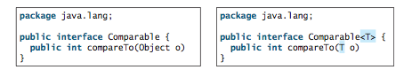
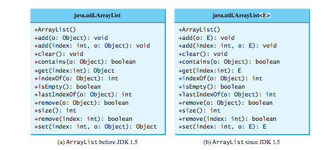
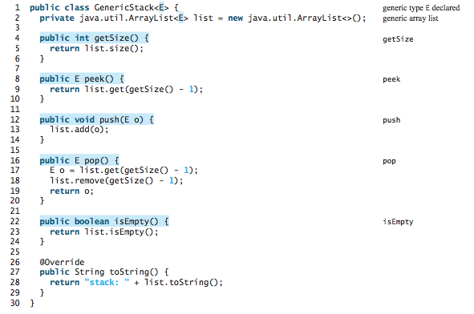
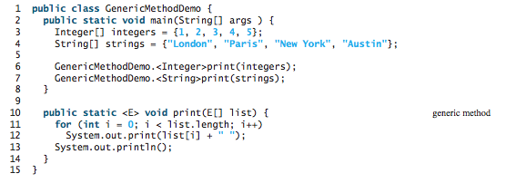
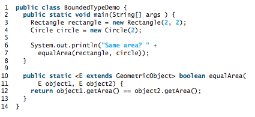
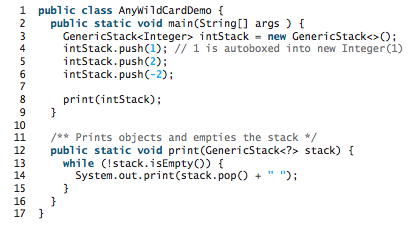
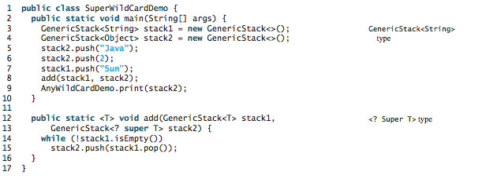
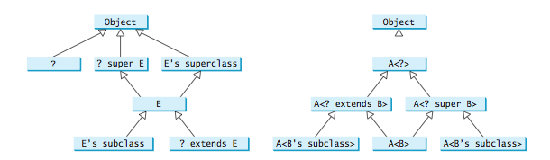

CS203: Programming with Data Structure
Lecture 3 / Generics
Reading assignment: chapter 19
Lesson Objectives
- To describe the benefits of generics
- To use generic classes and interfaces
- To define generic classes and interfaces
- To explain why generic types can improve reliability and readability
- To define and use generic methods and bounded generic types
- To develop a generic sort method to sort an array of Comparable objects
- To explain why wildcard generic types are necessary
- To describe generic type erasure and list certain restrictions and limitations on generic types caused by type erasure
Generics Overview
Generics let you parameterize types. The key benefit of generics is to enable errors to be detected at compile time rather than at runtime. A generic class or method permits you to specify allowable types of objects that the class or method can work with. If you attempt to use an incompatible object, the compiler will detect that error.
Examples of Generics in Action
Comparable before JDK 1.5 and after JDK 1.5
UML Class Diagram of an ArrayList
To create an array of Strings:
ArrayListmyList = new ArrayList (); myList.add("cookies"); myList.add("milk"); String second = myList.get(1);
Note that casting (in the above example) is no longer required.
ArrayList<...> myList = new ArrayList<...>()
Roll our own Generic Class
Roll our own Generic Method
- To define a generic type for a class, place it after the class name, such as GenericStack<E>.
- To define a generic type for a method, place the generic type before the method return type, such as <E> void max(E o1, E o2).
public class ArrayList< K > {
public static < E > void ArrayList(E e1) { }
}
Bounded versus Unbounded Generic Type
Unbounded generics imply that the generic type E extends the Object, thus unbounded.
public staticboolean isAlive() { ... }
Generics and Wild Card
Below is a slightly more complicated case of super wildcard.
The inheritance relationship involving generic types and wildcard types is summarized below. In this figure, A and B represent classes or interfaces, and E is a generic type parameter.
Erasure Type
The compiler uses the generic type information to compile the code, but erases it afterward. Thus, the generic information is not available at runtime. This approach enables the generic code to be backward compatible with the legacy code that uses raw types.
There are limitations with erasure type with regards to generics:
- Cannot Use new E()
- Cannot Use new E[]
- A Generic Type Parameter of a Class Is Not Allowed in a Static Context
- Exception Classes Cannot Be Generic
Lab Exercises
For each of the following exercises, practice developing and running your program with Eclispe. Note that the lab assignments are not graded.
- Implement a Generic Queue class.
- Use generics to implement a container that finds the max and min values for the Generic Queue class.
- Implement a method that shuffles the Generic Queue that you've created above.